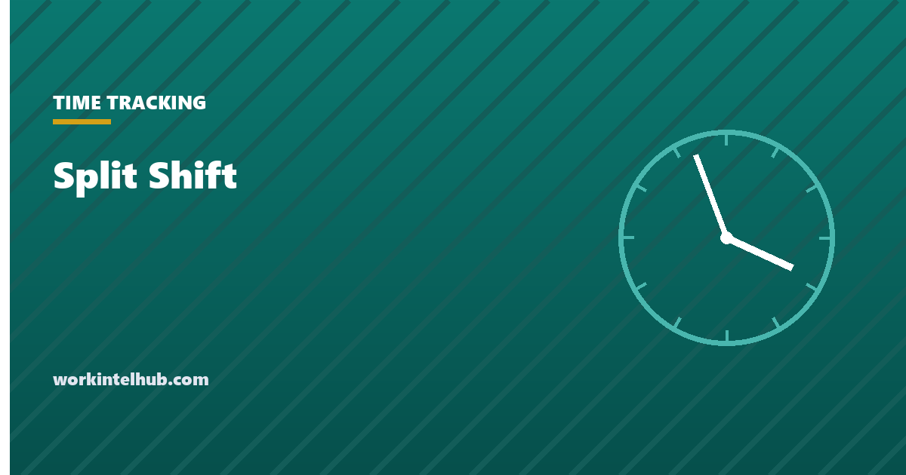

Split Shift

A split shift is a working day divided into two or more segments by an unpaid, non-working gap that the employer sets, longer than a meal break. A restaurant server working 11:00 to 14:00 and 17:00 to 22:00 is on a split shift; a driver doing the school run at 07:00 and 15:00 is the classic example.
Federal law treats the gap as simply unpaid. California, and a handful of other jurisdictions, pay a premium for the inconvenience, and the California rule is precise enough to calculate. The calculator does that, and the rest of the page covers when the gap is genuinely unpaid and how to run split shifts without losing the people on them.
California split shift premium calculator
California 2026 state rate is 16.90; use the local rate if higher
Models the California rule: one extra hour at the applicable minimum wage, reduced by any amount the day's wages already exceed minimum wage for the hours worked. The gap between segments must be unpaid, employer-set, and longer than a meal period.
The federal position: the gap is unpaid, if it really is a gap
The Fair Labor Standards Act has no split shift premium. The hours in each segment are hours worked and the gap is not, provided the employee is genuinely free during it. Under 29 CFR Part 785, time during which an employee is "engaged to wait" is work time; an employee required to stay on the premises, or to be available in a way that prevents using the time for their own purposes, is working through the gap and must be paid for it. A three-hour break that the employee must spend in the staff room is three hours of pay.
The other federal consequence is on the overtime threshold. Two segments totalling nine hours in one day are nine hours toward the 40-hour week, and in daily-overtime states nine hours in a day, regardless of the gap. The hours worked guide covers the engaged-to-wait rules in more detail.
The California rule
The California Division of Labor Standards Enforcement defines a split shift as "a work schedule that is interrupted by non-paid and non-working time periods established by the employer", and the wage orders require a premium of "one hour at the state minimum wage, or the local minimum wage if there is one, whichever is greater". The premium is not automatic for everyone: "any money earned over and above the state, or local, minimum wage will be credited towards the employer's obligation to pay the split shift premium".
In practice that means the premium is owed in full to employees at minimum wage and shrinks to nothing for employees paid enough above it. The calculation is: minimum wage times hours worked, plus one more hour at minimum wage, minus what the employee was actually paid for the day. If the result is positive, that is the premium. At the 2026 state rate of $16.90, an eight-hour split shift at $17.50 an hour earns $140, the floor is $152.10, and $12.10 is owed. At $20 an hour the floor is already covered.
Three details matter. A meal period does not create a split shift, however long. An employee who requests the gap for their own reasons is not on a split shift. And the premium is a wage, so it goes on the pay stub and counts for the regular rate.
Other jurisdictions
New York's Hospitality Wage Order pays a "spread of hours" premium of one hour at minimum wage when the day, gap included, exceeds ten hours, and a split shift premium on the same basis for restaurant and hotel workers. Washington, D.C. has a similar spread-of-hours rule. Most states have neither, and the federal rule applies. Employers running split shifts across states should check each one, because the premium is the kind of small, recurring underpayment that becomes a class claim.
Running split shifts without losing people
- Make the gap long enough to be worth something. A 90-minute gap is unpaid time the employee cannot use. Three hours lets them go home. Below two hours, consider paying it.
- Volunteers first, then rotation. Some people want split shifts; parents on school runs often do. Assign to them first and rotate the rest.
- Count the day, not the segments, for overtime. Nine hours across two segments is nine hours.
- Put the gap on the schedule and the time record. An unrecorded gap looks like an unpaid meal period that was too long, which is a different violation. The schedule builder handles the planning side and the time card calculator the record.
Key takeaways
- A split shift is a day divided into segments by an unpaid, employer-set gap longer than a meal break.
- Federal law has no premium, but the gap is unpaid only if the employee is genuinely free. Engaged-to-wait time is paid.
- California pays one hour at the applicable minimum wage, reduced by any amount the day's wages exceed minimum wage for the hours worked.
- At the 2026 state rate, an eight-hour split shift at $17.50 owes $12.10; at $20 nothing is owed.
- A meal period never creates a split shift, and a gap the employee requested does not either.
- New York and Washington, D.C. have spread-of-hours rules. Most states have nothing beyond the federal position.
Frequently asked questions
What is a split shift?
A working day divided into two or more segments by an unpaid, non-working gap set by the employer and longer than a meal period. Working 07:00 to 10:00 and 15:00 to 19:00 is a split shift; working 09:00 to 17:00 with an hour's lunch is not.
Do employers have to pay for the gap in a split shift?
Under federal law, no, provided the employee is completely free during it. If they must stay on site or remain available, the gap is work time and must be paid. California and a few other jurisdictions add a premium for the split itself.
How is the California split shift premium calculated?
Multiply the applicable minimum wage by the hours worked, add one more hour at minimum wage, and subtract what the employee was actually paid for the day. Any positive result is the premium. Employees paid well above minimum wage often receive nothing because their wages already cover it.
Does a long lunch count as a split shift?
No. A bona fide meal period does not create a split shift regardless of length. The gap has to be a separate unpaid period set by the employer beyond the meal break.
What if the employee asked for the split schedule?
Then it is not a split shift for premium purposes in California. The rule applies to gaps established by the employer. Document the request in writing.
Does a split shift affect overtime?
The hours in both segments count toward the daily and weekly thresholds as if the gap did not exist. Nine hours across two segments is nine hours in a day, which is an hour of daily overtime in California and nine hours toward the federal 40.